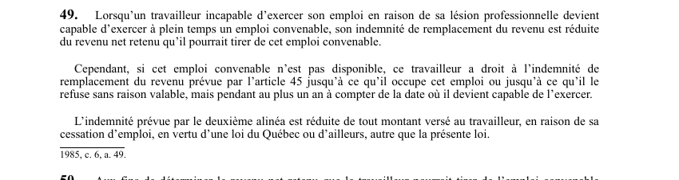

art-49-LATMP : IRR et emploi convenable
Un article du wiki ⚖️ Recueil législatif
🌐 LegisQuébec · 📄 PDF officiel (page 20)
Texte officiel : capture du PDF

🔗 Ouvrir a cette page : LATMP.pdf : page 20 · texte a jour au 20 février 2024
En bref
Le travailleur qui devient capable d'exercer à plein temps un emploi convenable voit son IRR réduite du revenu net qu'il pourrait tirer de cet emploi.
- IRR réduite du revenu net de l'emploi convenable que le travailleur peut exercer.
- Emploi convenable non disponible : IRR maintenue au plus un an.
- Réduction des montants versés à la cessation d'emploi.
- Durée maximale (emploi non disponible) : 1 an.
Jurisprudence
Décisions du recueil citant cet article :
Jurisprudence
- Houle et Distributions Gerry Grondin inc (2020 QCTAT 3322) (2020 QCTAT 3322)
Voir aussi
- art. 48 · droit : le travailleur qui redevient capable d'exercer son emploi après l'expiration de son délai de retour au travail a droit à l'IRR jusqu'à sa réintégration (son emploi ou un emploi équivalent) ou jusqu'à son refus sans raison valable, mais pendant au plus un an.
- art. 50 · fins déterminer revenu net.
- 🔧 Modifié par : LMRSST art. 17 · remplace art.
- ↑ Loi : LATMP
Pages qui pointent ici (8)
- art-17-LMRSST, mod. art. 49 LATMP Recueil législatif
- art-48-LATMP, fin IRR Recueil législatif
- art-52-LATMP, malgré articles à deuxième Recueil législatif
- Houle et Distributions Gerry Grondin inc (2020 QCTAT 3322) Recueil législatif
- Index des décisions (table de travail) Recueil législatif
- IRR (indemnités) Droit du travail
- LATMP - Chapitre III - Indemnités (IRR et préjudice corporel) Recueil législatif
- PDFs Recueil législatif